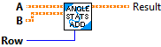
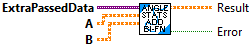
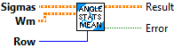
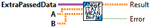
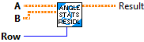
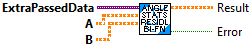

Adds a and b while normalizing the resulting value in the selected row as an angle.
Inputs:
- a -- A vector to add with.
- b -- A vector to add with.
- row -- The row containing angles to be normalized.
Outputs:
- Result -- Sum of two vectors with angle at the given index normalized.

Returns a function that adds two vectors while normalizing the resulting value in the selected row as an angle. The calling parameters for this function adhere to to those required to be called as F or H functions.
Inputs:
- ExtraPassedData -- Variant containing extra data passed to the function. For this instance the data contains.
-- integer -- row -- The row containing angles to be normalized.
- A -- A matrix
- B -- B matrix
Outputs:
- Result -- Function returning of two vectors with angle at the given index normalized.
- Error -- If TRUE, an error has occured.

Computes the mean of sigmas with the weights Wm while computing a special angle mean for a select row.
Inputs:
- sigmas -- Sigma points.
- Wm -- Weights for the mean.
- Row -- The row containing the angles.
Outputs:
- Result -- Mean of sigma points.

Returns a function that computes the mean of sigmas with the weights Wm while computing a special angle mean for a select row.
Inputs:
- ExtraPassedData -- Variant containing extra data passed to this routine. For this routine the data contains:
- integer -- Row -- The row containing the angles.
- A -- A matrix
- B -- B matrix
Outputs:
- Result -- Function returning mean of sigma points.
- Error -- If TRUE, an error occured.

Subtracts a and b while normalizing the resulting value in the selected row as if it were an angle.
Inputs:
- a -- A vector to subtract from.
- b -- A vector to subtract with.
- row -- The row containing angles to be normalized.
Outputs:
- Result -- Difference of two vectors with angle at the given index normalized.

Returns a function that subtracts two vectors while normalizing the resulting value in the selected row as if it were an angle. The calling parameters for this function adhere to to those required to be called as F or H functions.
Inputs:
- ExtraPassedData -- Extra data passed into this function. For this function, it contains:
- angleStateIdx -- The row containing angles to be normalized.
- A -- A matrix
- B -- B matrix
Outputs:
- Result -- Function returning difference of two vectors with angle at the given index normalized.
- Error -- If TRUE, an error occured.